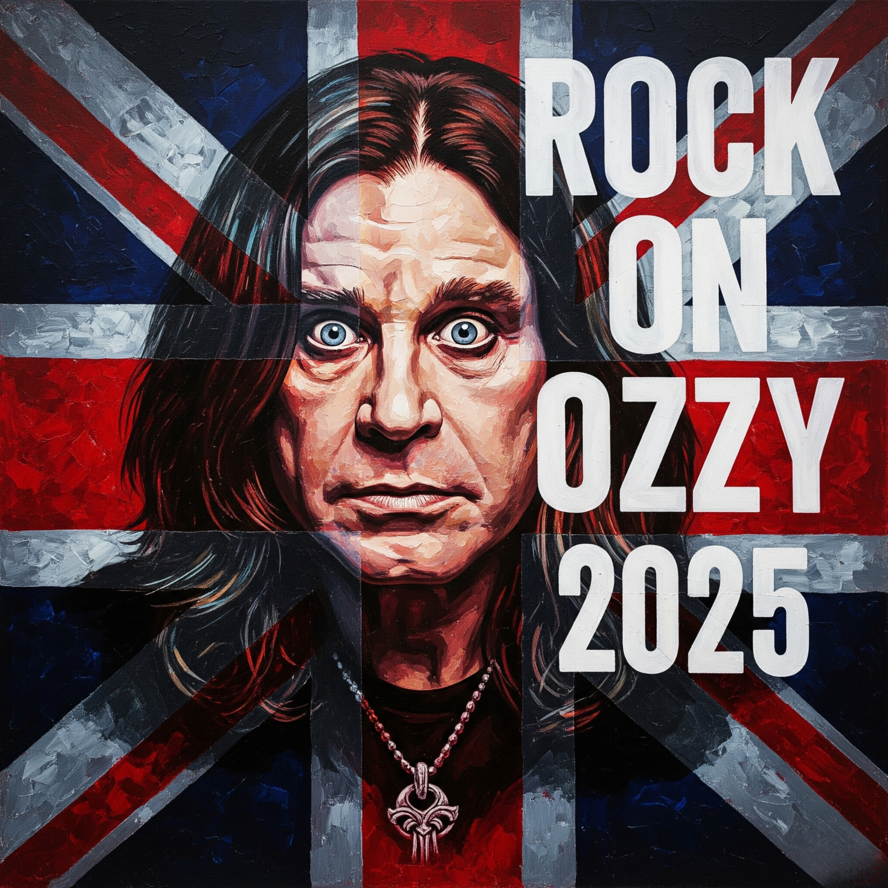

Ozzys Leben – Timeline einer Legende
1948
👶 Geboren in Birmingham
John Michael "Ozzy" Osbourne wird in Aston geboren. Ein Arbeiterkind, das die Welt verändern sollte.
1968
🎸 Black Sabbath
Die Geburtsstunde des Heavy Metal. Mit düsteren Riffs und Ozzys Stimme beginnt eine neue Ära.
1979
🚀 Solo-Karriere
Nach dem Aus bei Sabbath startet Ozzy mit "Blizzard of Ozz" voll durch. "Crazy Train" wird zur Hymne.
1982
🦇 Der Fledermaus-Vorfall
In Des Moines beißt Ozzy einer Fledermaus den Kopf ab – aus Versehen, aber legendär!
2002
📺 The Osbournes
Ozzy wird zum Reality-TV Star auf MTV. Die ganze Welt liebt das Chaos der Familie Osbourne.
2025
🖤 R.I.P. Prince of Darkness
Ozzy verlässt die Bühne des Lebens, aber sein Erbe ist in jedem Metal-Riff unsterblich.
Galerie - The Visual Legacy

The Icon

Prince of Darkness

Live Magic
Tribute Wall
Es brennen 0 Kerzen.
Wisdom of Ozzy
Klick für ein Ozzy-Zitat!